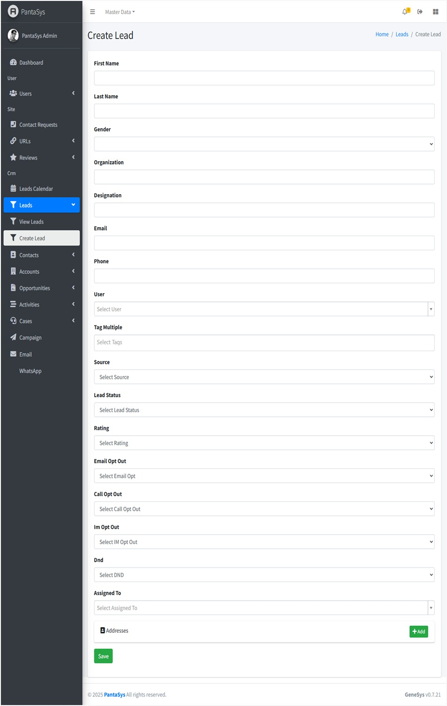
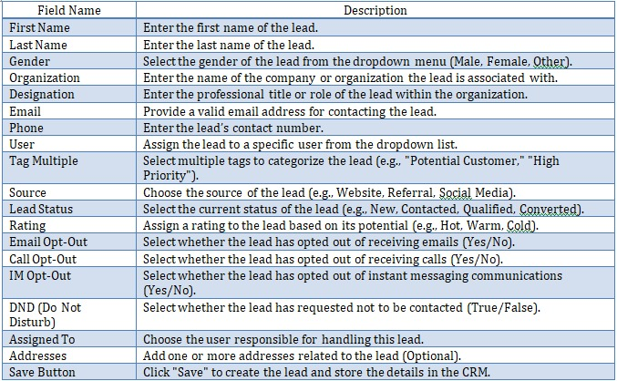
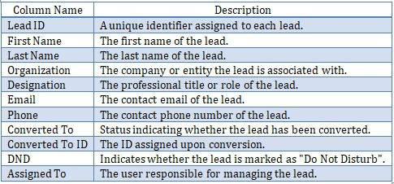

Customer Relationship Management (CRM)
The CRM in PantaSys is designed to streamline the management of leads, contacts, accounts, opportunities, activities, cases, calendars, and campaigns, enabling efficient tracking and nurturing of customer relationships.
4. Leads
The Leads function focuses on lead management. This section provides a detailed overview of the “Leads” feature, including navigation, CRUD operations, table columns, and additional functionalities.
Users with sufficient roles can:
View Leads: Display a list of leads in a table format.
Create Lead: Add new leads with specific roles.
{kind=link}
{kind=link}
{kind=link}
4.2 Create Lead Form
The Create Lead form allows users to add new leads into the system.
{kind=link}
Below are the field descriptions along with their expected input values:
{kind=link}
Form Functionality
The form ensures structured lead entry to maintain data consistency.
Dropdown menus help in selecting predefined values, reducing manual errors.
The Save button finalizes the lead creation process.
4.3 Managing Leads
PantaSys CRM provides comprehensive functionalities to manage leads effectively.
Creating a Lead
To add a new lead:
Navigate to Leads: Click the Leads button and expand the dropdown list.
Create Lead: Click the Create Lead button.
Fill in Details: Complete the fields in the form.
Save: Click “Save” to add the new lead to the system.
Viewing a Lead
To view details of an existing lead:
Navigate to View Leads: Access the View Leads page.
Lead Table: Leads are displayed in a table format with relevant details.
View Icon: Click the View icon in the Actions column corresponding to the desired lead to see detailed information.

Updating a Lead
To modify an existing lead:
Navigate to View Leads: Access the View Leads page.
Edit Icon: Locate the lead to be updated and click the Edit icon.
Modify Details: Make the necessary changes in the form.
Save: Click Save to apply the updates.
Deleting a Lead
To remove a lead from the system:
Navigate to View Leads: Access the View Leads page.
Delete Icon: Locate the lead to be deleted and click the Delete icon.
Confirm Deletion: Confirm the deletion when prompted to remove the lead.
4.4 Lead Table
The Lead Table provides a structured view of lead information with the following columns:
{kind=link}
{kind=link}